Columbia University · IEOR 4733 · Algorithmic Trading
May 12, 2026
We replicate and extend the Avellaneda-Stoikov (2008) market making model and its Stanford adaptation
(Fushimi, Rojas & Herman, 2018), introducing a proprietary event-driven backtester calibrated on real
WRDS TAQ data across five equities. Our key contributions are independent parameter calibration (κ via
exponential regression, σ historically, γ = 0.01), a dual queue-priority model, and a rolling realized
volatility extension. The optimal A-S strategy improves on PnL over the NBBO baseline across all five
tickers while achieving significantly tighter end-of-day inventory control.
5 / 5
Tickers with optimal PnL improvement over baseline
↓ σ
Inventory std. dev. — sharply reduced vs. baseline
0.942
R² on κ-regression for AAPL (OLS fit)
2
Queue models — front-of-queue and back-of-queue
The spread decays linearly from market open to close as predicted by the model. Final inventory distributions
are significantly more concentrated around zero under optimal control than baseline — a more pronounced
improvement than seen in either the original A-S paper or the Stanford modification.
Notably, the model was correctly calibrated to market open/close spreads across most tickers
without tuning any parameters beyond the stated methodology.
The optimal market maker posts bid and ask quotes symmetric around the indifference price — the mid at which the agent is indifferent between buying and selling given current inventory.
Indifference price
\[ r(s,t) = s - q\gamma\sigma^2(T-t) \]
Optimal bid-ask spread
\[ \delta^a + \delta^b = \gamma\sigma^2(T-t) + \frac{2}{\gamma}\ln\!\left(1 + \frac{\gamma}{\kappa}\right) \]
The spread decays linearly from open to close. Parameters σ and κ are calibrated empirically; γ = 0.01 follows the original A-S recommendation rather than being tuned to market spreads — avoiding the identification problem present in the Stanford paper.
Poisson order flow intensity
\[ \lambda(\delta) = A e^{-\kappa\delta}, \qquad \kappa \text{ estimated via OLS: } \log\lambda(\delta) = \log A - \kappa\delta \]
Order sizes are adjusted exponentially with inventory, keeping the market maker quoting at all times while naturally reducing directional exposure as positions accumulate.
Exponential sizing function
\[
\phi^\text{bid}_t =
\begin{cases}
\phi^\text{max}_t & q_t < 0 \\
\phi^\text{max}_t \cdot e^{-\eta q_t} & q_t > 0
\end{cases}
\qquad
\phi^\text{ask}_t =
\begin{cases}
\phi^\text{max}_t & q_t > 0 \\
\phi^\text{max}_t \cdot e^{-\eta q_t} & q_t < 0
\end{cases}
\]
Default parameters: φmax = 100 shares, η = 0.005. This formulation is strictly preferable to hard position limits, which force the agent to stop quoting entirely once a threshold is hit.
The execution logic follows the Stanford paper's algorithm structure, adapted for the WRDS TAQ replay environment:
Algorithm 1 — Market Making Loop
while current_time < end_time do
if no orders in book then
Quote bid and ask prices
else if 1 order in book then
if current_time − execution_time > waiting_time then
Cancel outstanding order; quote new bid and ask
else Wait
else if 2 orders in book then
if current_time − quote_time > update_time then
Cancel both orders; quote new bid and ask
else Wait
end
| 01 |
Proprietary backtester |
Event-driven replay on WRDS NBBO and trade tape. Mixes Poisson order flow (inside NBBO) with historical market flow (on/outside NBBO). Supports front-of-queue and back-of-queue priority toggling. |
| 02 |
Calibrated κ |
Exponential regression of fill frequency on distance from mid, fit independently per ticker. R² = 0.942 on AAPL. The Stanford paper uses a single unmotivated fixed κ. |
| 03 |
True parameter estimation |
σ estimated from prior-week historical volatility; γ = 0.01 (A-S original). The Stanford paper calibrates σ and γ to other market participants' open/close spreads — effectively cheating. |
| 04 |
Rolling σ extension |
10-minute rolling realized variance replaces fixed σ², allowing the spread to widen during volatile intraday periods. Infrastructure built; excluded from main results due to sensitivity. |
1
Data loading
Fetch TAQ quote and trade data from WRDS. Calibration week: Jun 5–9, 2017. Evaluation week: Jun 12–16, 2017. Cache to disk for subsequent runs.
2
Parameter calibration
Fit κ per ticker via OLS regression on log fill frequency. Estimate σ from prior-week daily volatility. Set γ = 0.01.
3
Event-driven simulation
Replay TAQ trades second-by-second. Post optimal quotes, check fills against queue model, update inventory and P&L.
4
Queue model comparison
Run both front-of-queue and back-of-queue models simultaneously. Back-of-queue is worst-case; both models remain profitable.
5
Benchmarking
Run NBBO passive baseline on identical price paths. Compare terminal P&L distributions, inventory density, spread capture rate, fill-per-quote rate.
AAPL
NASDAQ (Q)
Penny-spread
reference
AMZN
NASDAQ (Q)
Wide spread
flat model
Each ticker is filtered to its primary venue in both quote and trade streams to avoid cross-venue contamination. The Poisson effective_mu is scaled inversely with open_spread so wide-spread tickers receive realistic fill probabilities.
Model diagnostics — order sizing & intensity
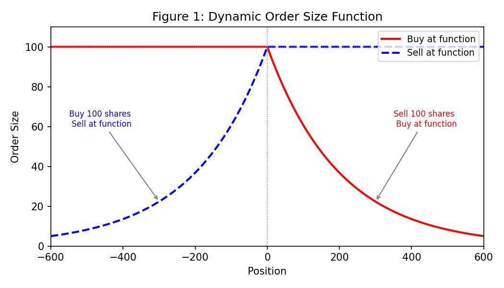
Fig 1 — Dynamic order size function vs. inventory position. Exponential decay reduces quote size as directional exposure accumulates.
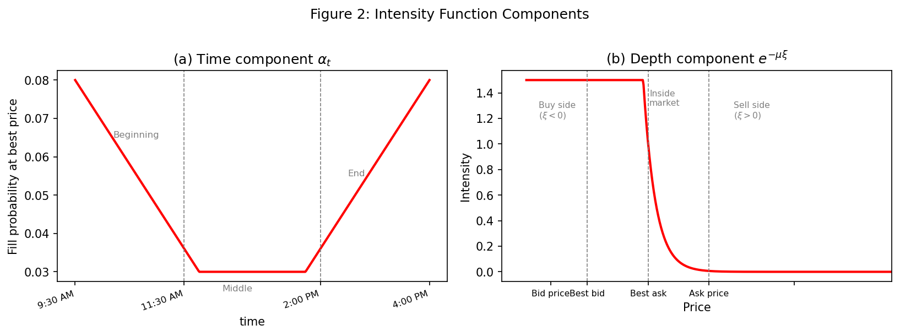
Fig 2 — Poisson fill intensity λ(δ) as a function of distance from mid. Time component (bathtub) and depth component shown separately.
κ calibration — AAPL exponential regression
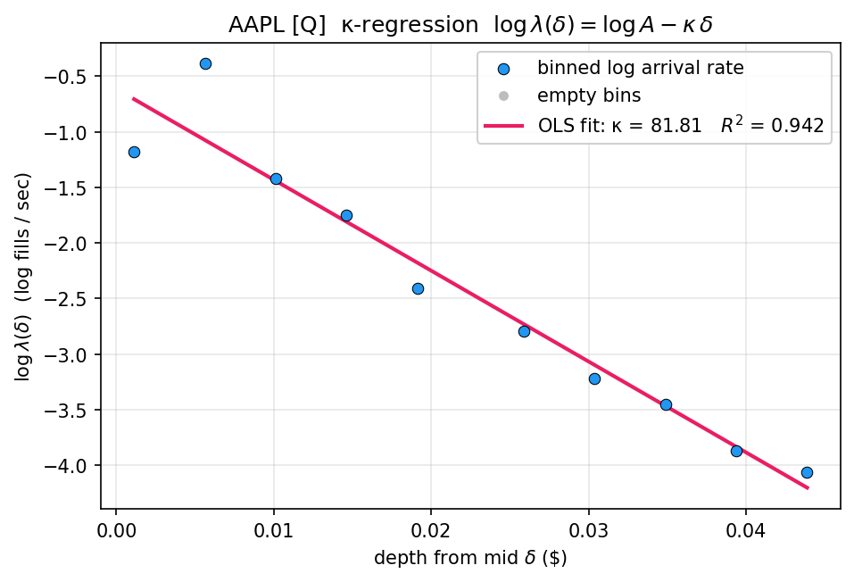
Fig 3 — OLS fit of log fill rate on depth from mid for AAPL. κ = 81.81, R² = 0.942. Each ticker is calibrated independently from prior-week TAQ data.
Spread dynamics — AAPL (penny spread) vs. AMZN (wide spread)
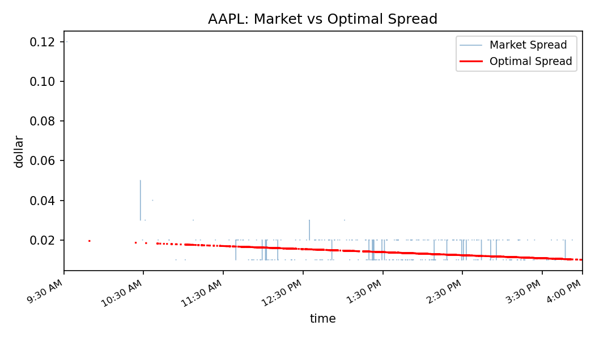
Fig 4a — AAPL: market spread vs. optimal quoted spread. Linear decay from open to close matches model prediction.
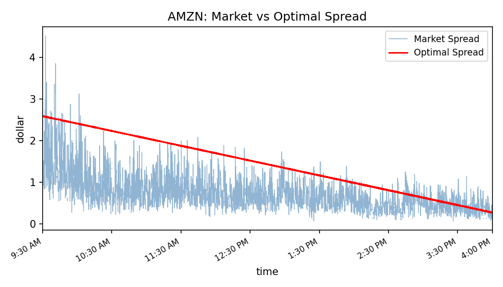
Fig 4b — AMZN: wide spread triggers the flat-model fallback (A = 0). Quoted spread tracks market spread without the linear decay.
Intraday quote dynamics — AAPL mid-price, indifference price, bid/ask
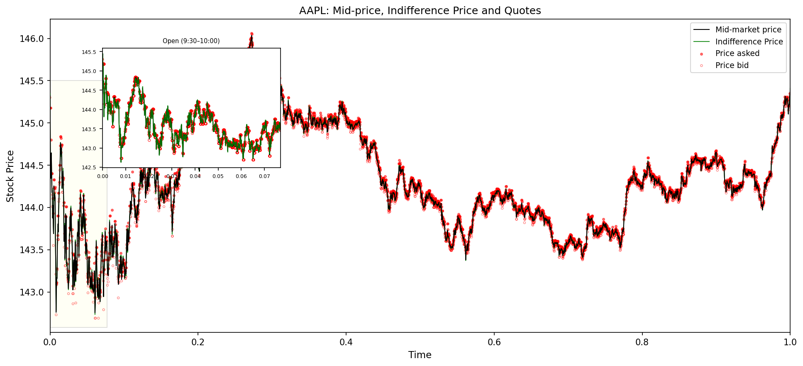
Fig 5 — AAPL intraday: mid-price (black), indifference price (green), bid and ask quotes. The indifference price tracks inventory drift; quotes remain symmetric around it.
P&L and inventory control — AAPL (front-of-queue)
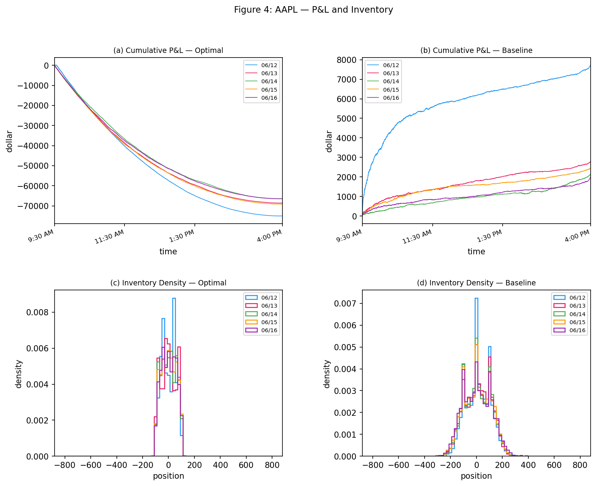
Fig 6 — AAPL: cumulative P&L (optimal vs. baseline) and end-of-day inventory density across all 5 trading days. Optimal strategy concentrates inventory near zero with marginal P&L improvement.
BBO spread distribution across all tickers
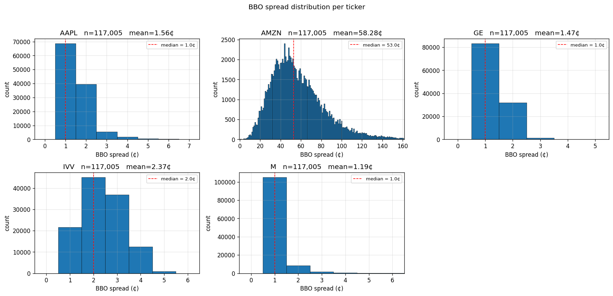
Fig 7 — NBBO spread distribution in dollar terms per ticker. AMZN's wide spread distribution motivates the flat-model treatment; AAPL, GE, IVV, and M cluster near penny spreads.
Realized volatility extension — P&L summary across all tickers
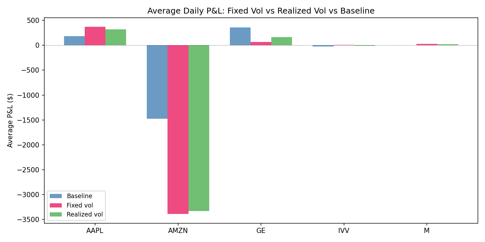
Fig 8 — Average daily P&L: fixed-vol A-S vs. realized-vol A-S vs. NBBO baseline, across all five tickers. RV extension shows marginal improvement on volatile names.
Spread comparison — AAPL front-of-queue vs. back-of-queue
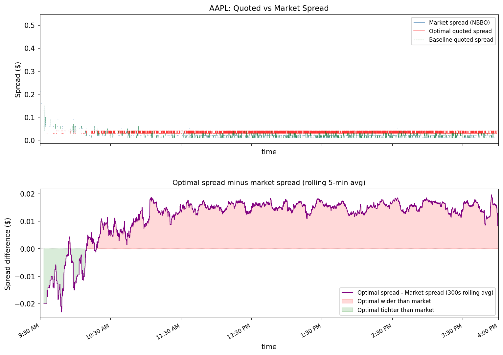
Fig 9a — AAPL front-of-queue: quoted spread vs. NBBO with rolling 5-min difference. Optimal spread is wider than market early in the day, converging by close.
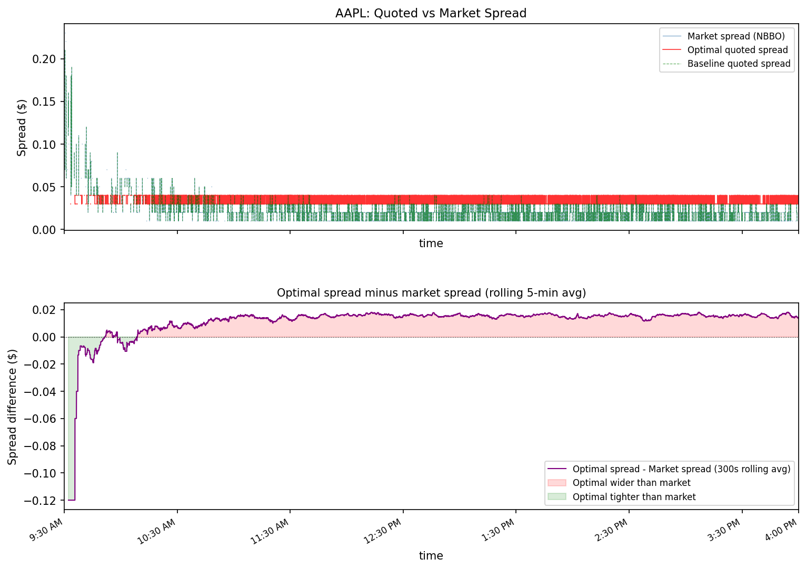
Fig 9b — AAPL back-of-queue (worst-case): same analysis under back-of-queue priority. Strategy remains profitable despite reduced fill probability.
L2 / L3 data
Incorporate DataBento or LOBSTER order book data for direct queue position estimation.
Order book imbalance
Use OBI = (Vbid − Vask) / (Vbid + Vask) as an inventory control signal.
Rolling calibration
Adapt σ and κ intraday using rolling windows to capture regime changes within a session.
Alternative algorithms
Explore alternative execution algorithms beyond the Stanford bathtub time-modifier framework.
-
A-S 2008
Avellaneda, M. & Stoikov, S. High-frequency trading in a limit order book. Quantitative Finance, 8(3), 217–224.
-
CJP 2015
Cartea, Á., Jaimungal, S. & Penalva, J. Algorithmic and High-Frequency Trading. Cambridge University Press.
-
FRH 2018
Fushimi, T., Gonzalez Rojas, C. G. & Herman, M. Optimal High-Frequency Market Making. Stanford University.